Contents
clc; clear; close all; run graphic_startup.m; % some settings for plotting
Description of state variables
U: input units X: total current input Y: output unit W: weight from U to Y
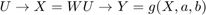
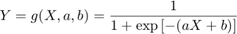
Plasticity rules
Intrinsic plasticity from Triesch 2007
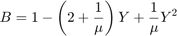
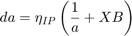
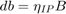
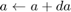
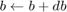
Synaptic plasticity, associative Hebbian
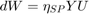
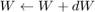
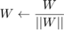
Parameters
N = 10; % side of the square input field N_U = N^2; % number of inputs N_Y = 1; % number of outputs % Activation function parameters of Y a_init = 1; % gain b_init = -1; % bias % Learning parameters eta_ip = 1e-2; % learning rate of IP eta_sp = 1e-2; % learning rate of SP mu = 1/(2*N); % target mean output rate % Input generation parameters num_train = 10e4; % number of input instances to train p_bar = 1/N; % prob of bar turned on
Initialization
a = a_init; b = b_init; W = normalize_weight(rand(N_Y, N_U)); % from uniform random -> norm L2 % pre-generate inputs U_trains = arrayfun(@(~) generate_bar_input(N, p_bar), 1:num_train, 'uni', 0); % pre-allocate to store trained data Y_trains = zeros(N_Y,num_train); X_summary = zeros(N_Y,num_train); a_summary = zeros(N_Y,num_train); b_summary = zeros(N_Y,num_train); W_summary = zeros(N_U,num_train);
Training
tic for i = 1:num_train % process input -> output U = U_trains{i}; X = W * U; Y = 1./(1 + exp(-(a.*X + b))); % save data Y_trains(:,i) = Y; X_summary(:,i) = X; W_summary(:,i) = W; a_summary(:,i) = a; b_summary(:,i) = b; % update trained variables % Intrinsic plasticity followed Triesch 2007 common_factor = 1 - (2 + 1./mu).*Y + (Y.^2)./mu; da = eta_ip * (1./a + X .* common_factor); db = eta_ip * common_factor; a = a + da; b = b + db; % Hebbian plasticity dW = eta_sp * (Y * U'); W = normalize_weight(W + dW); end toc
Elapsed time is 7.624382 seconds.
Plot example inputs
num_inp_toplot = 25; Us_toplot = U_trains(randperm(num_train, num_inp_toplot)); nrows = ceil(sqrt(num_inp_toplot)); ncols = nrows; figure('position', [0,0,0.5,1]); colormap('gray'); for i = 1:num_inp_toplot subplot(nrows,ncols,i); hold on; image(reshape(Us_toplot{i}, [N,N])); if i == 1 title({'example inputs', sprintf('$p_{bar}=%g$', p_bar)}); end set(gca, 'xtick', '', 'ytick', '', 'box', 'on'); axis square; xlim([0.5,N+0.5]); ylim([0.5,N+0.5]); end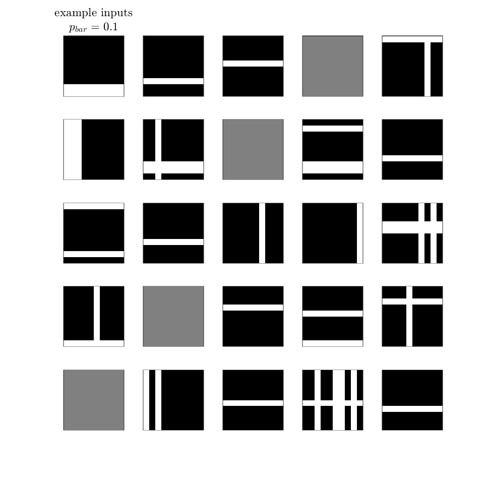
Plot weight matrix
num_W_toplot = 9; nrows = ceil(sqrt(num_W_toplot)); ncols = nrows; n_factor_plt = round(num_train/num_W_toplot); figure('units', 'normalized', 'position', [0,0,0.6,1]); colormap('gray'); for i = 1:num_W_toplot T = (i-1)*n_factor_plt + 1; W_plt = W_summary(:,T); W_plt = reshape(W_plt, [N,N]); U_plt = reshape(U_trains{T}, [N,N]); subplot(nrows,ncols,i); hold on; image(W_plt); title(sprintf('$W_{T = %d}$', T)); % caxis([0,0.2]); axis square; set(gca, 'xcolor', 'none', 'ycolor', 'none'); cbar = colorbar('Location', 'eastoutside'); cbar.Position = cbar.Position .* [1,1,1,0.6] + [0.03,-0.01,0,0]; end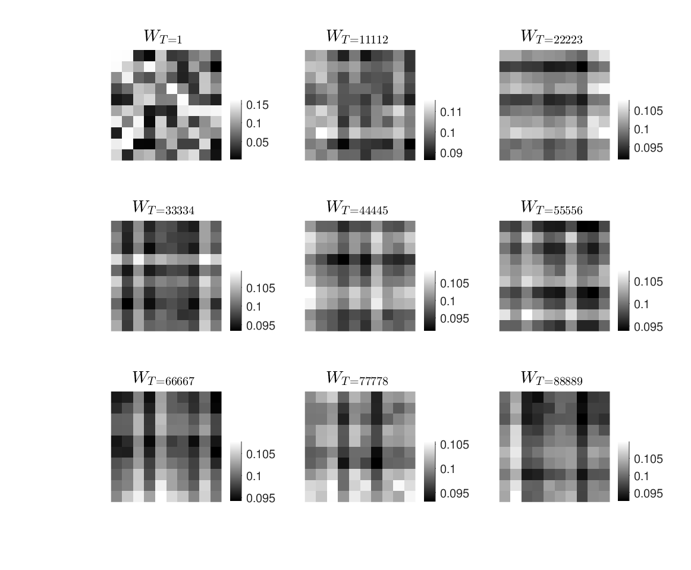
Plot summary of variables
T_histYs = round(4/5 * num_train) : num_train; x_vec = linspace(-5,5,100); y_vec = linspace(0,max(Y_trains),100); theo_Ypdf = exp(-y_vec/mu)/mu; T_sampled = [1, [0.33,0.67,1]*num_train]; figure; % 1. Output values during training subplot(3,3,[1,2]); hold on; plot(Y_trains, 'k.'); title('$Y$ during training'); set(gca, 'xcolor', 'none'); xlim([-1000, num_train]); % 2. Output distributions subplot(3,3,3); hold on; histogram(Y_trains(:,T_histYs), 50, 'edgecolor', 'k', 'linewidth', 2); plot(y_vec, theo_Ypdf, ':b'); title({sprintf('$\\mu = %g, \\langle Y \\rangle = %.4f$', ... mu, mean(Y_trains(:,T_histYs))), ... sprintf('distrib. from $T=%d$ to end', T_histYs(1))}); xlabel('output values'); ylabel('pdf'); % 2-inset. Log scale for Y-axis ax_pos = get(gca, 'position'); inset_ax = axes('position', ax_pos.*[1,1,0.6,0.6] + [0.1,0.05,0,0]); hold(inset_ax, 'on'); histogram(Y_trains(:,T_histYs), 50, 'edgecolor', 'k', 'linewidth', 2); plot(y_vec, theo_Ypdf, ':b'); set(gca, 'yscale', 'log'); ylabel('log scale'); legend('trained', '$\frac{1}{\mu}e^{-y/\mu}$', ... 'Location', 'northeast', 'fontsize', 12); % 3. Activation parameters during training subplot(3,3,[4,5]); hold on; plot(a_summary, 'k'); ylabel('$a$'); yyaxis right; plot(b_summary, 'color', 0.7*[1,1,1]); ylabel('$b$'); set(gca, 'xcolor', 'none', 'ycolor', 0.7*[1,1,1]); title(sprintf('$a$ and $b$ during training, $\\eta_{IP} = %g$', eta_ip)); xlim([-1000, num_train]); % 4. Sampled weights during training subplot(3,3,[7,8]); hold on; plot(W_summary(randperm(N_U, 50),:)', 'linewidth',3, 'color', [0,0,0,0.05]); title(sprintf('evolution of some weights, $\\eta_{SP} = %g$', eta_sp)); xlabel('\# step'); xlim([-1000, num_train]); % 5. Distribution of weights subplot(3,3,9); hold on; arrayfun(@(i) histogram(W_summary(:,i), 'linewidth', 2, 'numbins', 5), T_sampled); title('distrib. of weights ($W$)'); xlabel('weight values'); ylabel('pdf'); lgnd = legend('init', '1/3', '2/3', 'end'); title(lgnd, 'training progress');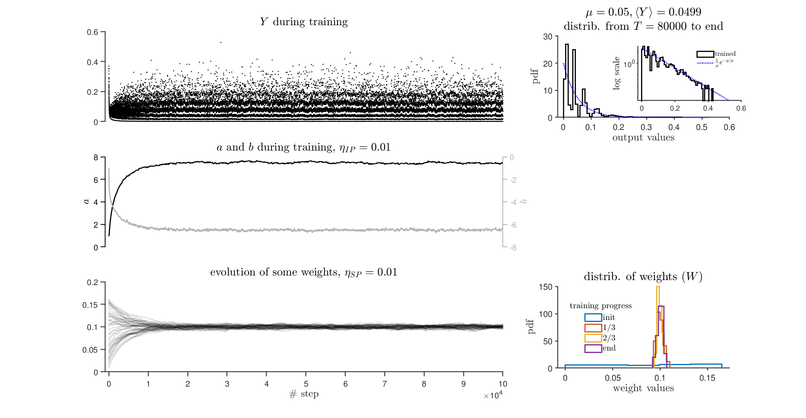
Helper functions
function W = normalize_weight(W) W = W ./ sqrt(sum(W.^2, 2)); end function X = generate_bar_input(N, p) X = zeros(N); % pick random rows/columns to turn on index_on = rand(N,2) < p; X(index_on(:,1),:) = 1; X(:,index_on(:,2)) = 1; X = X(:); % flatten % normalized to L2 norm_X = sqrt(sum(X.^2)); if norm_X > 0 X = X / norm_X; end end